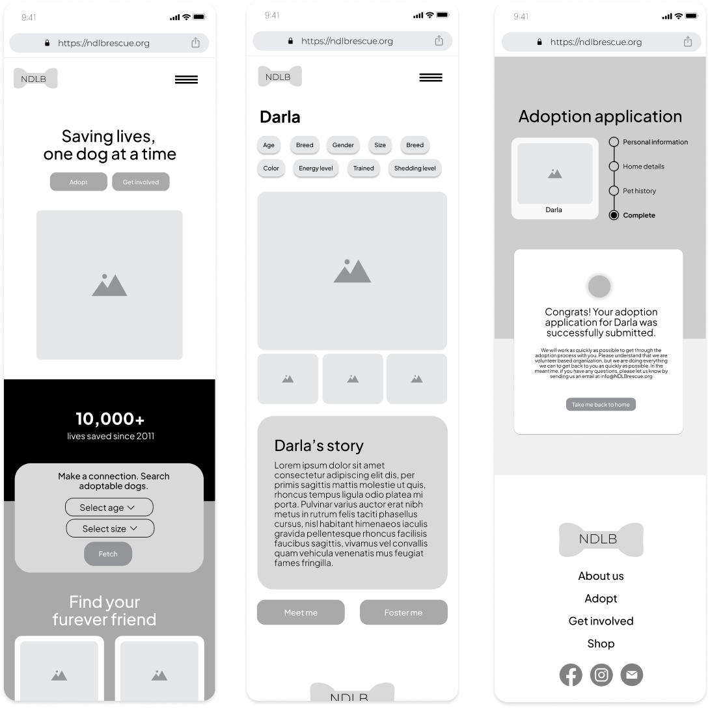
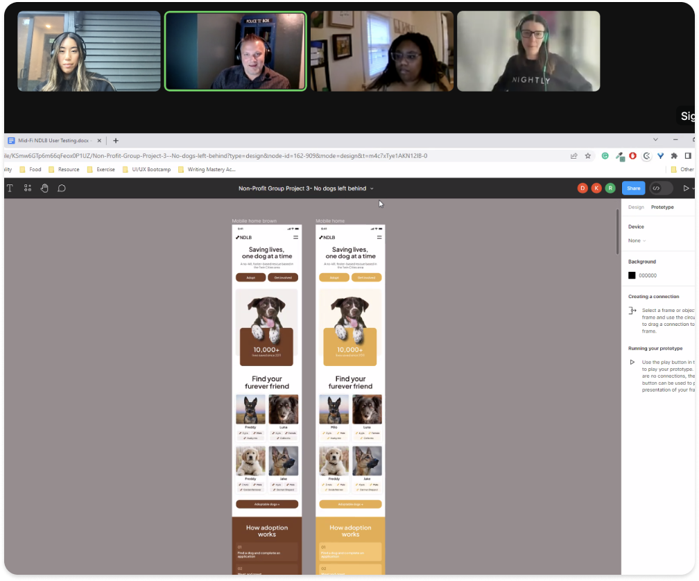
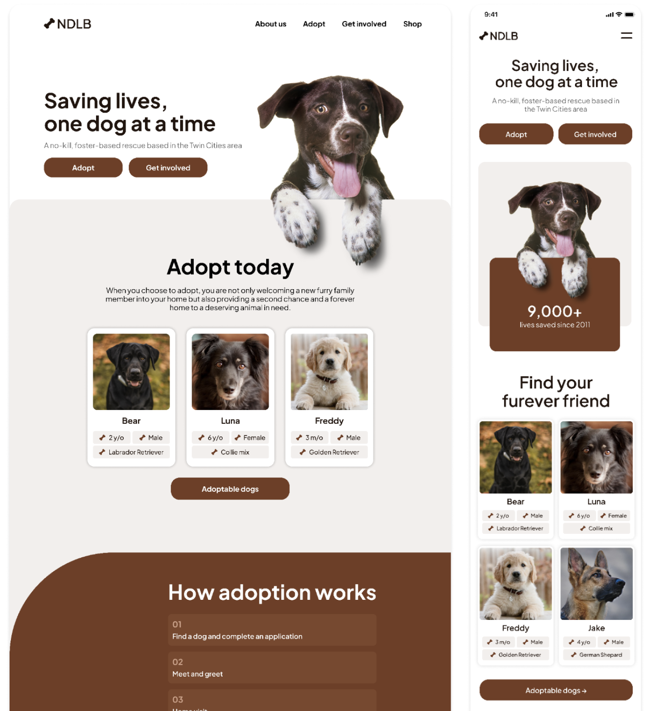

We were tasked to choose a non-profit for a website redesign. My group chose No Dog Left Behind. No Dog Left Behind is an organization dedicated to the finding forever families for dogs and protect and advocate for abused, neglected, and abandoned dogs.
Research
To understand who our users were and the problem we were trying to solve, we started with a proto persona to provide a starting point during the early stages of a project when limited information is available about the actual target audience. Our proto personas was based on assumptions, educated guesses, and preliminary research.
To organize and make sense of our research, we put together an affinity diagram to organize and categorize large amounts of information, ideas, or data into meaningful clusters, helping to identify patterns, themes, and relationships among them. We also organized an empathy map to gain a deeper understanding of a specific target user or customer's thoughts, feelings, behaviors, and motivations, in order to develop more user-centered and empathetic solutions.
Problem Statement
No Dog Left Behind is a non-profit organization dedicated to the fostering and adopting of dogs in need. Their website is intended to be a source of information for sheltering and adopting dogs; however, it fails to effectively showcase dogs available for adoption or seeking foster homes. The way it presents information requires improvement both in terms of content organization and visual appeal in order to generate greater interest and compassion for the cause.
Wireframes

It was time for the team to produce wireframes which are an inexpensive, scaled-down version of the solution to get a clear view of how real users would behave, think and feel when they interact with the end product.
Testing

With the wireframes created, it was time to text for usability. For the low fidelity wireframes, we tasked the users to find the adoptable dogs page, view a dog's profile and submit an online application for the dog. Testing provided valuable insights and while usability and the tasks were successful, there were some valuable insights on confusing “Meet me” copy under a dog’s profile and text that was too small on the adoption application submission page which we iterated on.
Final Prototypes

With the brown color chosen based off of user testing, it was time to update the style guidelines and mockup all the high fidelity wireframes. I give you, the new, No Dog Left Behind website, all high fidelity designs below by me!